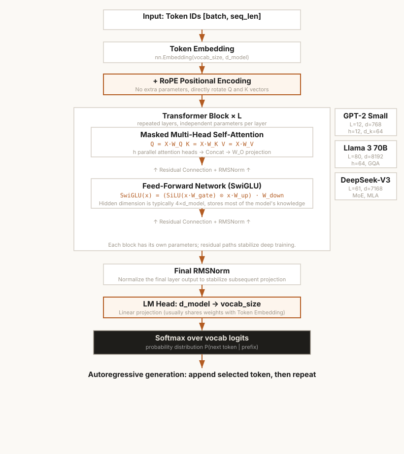

第4章 多头注意力与MLA
从MHA到GQA到DeepSeek MLA——KV Cache压缩之路
本章怎么学：先学 MHA，再把 GQA/MLA 当作压缩技巧
- 前置知识：第 3 章 Q/K/V、reshape、transpose。
- 学习目标：解释多头注意力为什么保留参数量但提高表示能力，并定量比较 MHA、MQA、GQA、MLA 的 KV Cache 和质量取舍。
- 课前阅读：阅读 Transformer 多头注意力段落、Shazeer (2019) MQA 和 Ainslie et al. (2023) GQA 摘要。
- 课后阅读：阅读 DeepSeek-V2 MLA 技术段落，写出 latent cache、解压投影和 RoPE 解耦的关系。
- 本章产出：MultiHeadAttention、GQA 和简化版 MLA。
- 完成标准：你能画出 Q 头很多、K/V 头较少时缓存如何变小。
- 练习产出：提交 MHA/GQA/MLA 实现、参数量和 KV Cache 表格，以及一次不同 head 配置的 ablation 说明；可用 Ch04 多头注意力作业测试 检查核心实现。

图 4-1: MHA vs GQA vs MLA——KV Cache 压缩方案演进与定量对比
4.1 从单头到多头——为什么一个头不够？
第3章实现了单头自注意力：一个 维的 Q/K/V 空间负责所有匹配模式。但语言中的关系是多元的——一个 token 需要从多个"视角"同时匹配其他 token。
具体场景：为什么单头不够？
考虑句子 "The cat sat on the mat because it was comfortable."
当模型处理单词 "it" 时，它需要回答多个问题：
- 句法问题："it" 是单数代词，它的指代对象在句法上应该是单数名词——这需要一种特定的匹配规则
- 语义问题："it" 应该指代"最合理"的东西——猫坐在垫子上，所以可能是"the cat"或"the mat"——这需要另一种匹配规则
- 位置问题："it" 前面的名词是"mat"，再前面是"cat"——模型需要区分位置 5 和位置 1 的 token
单头注意力只能用一个 维空间来编码所有这些复杂的匹配规则。这是不够的——就像让一个法官同时审理民事、刑事和行政案件，而他只有一种判断标准。
多头注意力的解决方案：并行子空间
多头注意力（MHA）的核心思想是：将输入 维空间分成 个 维子空间，每个头在各自的子空间中独立计算注意力，最后将所有头的结果拼接并通过输出投影 融合：
关键洞察：参数等价性
多头注意力的总参数量与单头注意力完全相等。因为 ：
Worked Example：MHA 不是靠增加参数变强
设 d_model=8，使用 n_heads=2，则每个头的维度 d_k=4。单头注意力若把 Q/K/V 都投影到 8 维，需要 3 * 8 * 8 = 192 个 QKV 参数；两个头各自有 3 * 8 * 4 = 96 个参数，总计仍是 2 * 96 = 192。
| 方案 | Q/K/V 投影空间 | QKV 参数量 | 注意力分数形状 |
|---|---|---|---|
| 单头 | 1 个 8 维空间 | 3 * 8 * 8 = 192 | [T, T] |
| 2 头 MHA | 2 个 4 维空间 | 2 * 3 * 8 * 4 = 192 | [2, T, T] |
两者参数量相同，但 MHA 产生两张不同投影空间里的注意力图，再把两个 4 维 head 输出拼回 8 维并交给 W_O 混合。它的表达优势来自“多个可学习相似度函数并行工作”，而不是单纯增加参数。
换句话说，多头注意力不是在"变大"，而是将已有的参数量重新组织成了多个更小的子空间。每个子空间学习不同的关注模式，最后的 负责将这些分散的信息整合在一起。
这是"Divide and Conquer"在深度学习中的经典体现——将一个大问题分解为多个更小、更专业的子问题并行解决。

图 4-2: Decoder-only Transformer (GPT) 完整架构——从 Token ID 到概率输出（第 6 章组装预览）
4.2 编程练习 1：实现 MultiHeadAttention
🖥️ 练习 1：MultiHeadAttention 模块
任务：实现一个完整的 MultiHeadAttention 模块。输入 x: (batch, seq_len, d_model)，输出 (output, attn_weights)。
要求：
- 使用单个
nn.Linear(d_model, 3 * d_model)实现 QKV 合并投影，然后通过reshape和unbind分离各头的 Q、K、V - 将头维度通过
transpose提到第 1 维（batch 之后），形状(b, h, s, d_k) - 实现缩放点积注意力（含可选的 causal mask 支持）
- 用
W_o输出投影将多头拼接后的结果映射回 - 返回
(output, attn_weights)，其中attn_weights形状为(b, n_heads, seq_len, seq_len)
# 预期用法 mha = MultiHeadAttention(d_model=768, n_heads=12, dropout=0.1) x = torch.randn(2, 16, 768) mask = torch.tril(torch.ones(16, 16)).unsqueeze(0).unsqueeze(0) out, weights = mha(x, mask) assert out.shape == (2, 16, 768) assert weights.shape == (2, 12, 16, 16) # 检查注意力权重归一化 assert torch.allclose(weights.sum(dim=-1), torch.ones(2, 12, 16))
💡 为什么合并 QKV 投影？GPU 对大矩阵乘法更高效——一个 (d, 3d) 的矩阵乘法比三个 (d, d) 的矩阵乘法之和更快，因为 GPU 的并行计算单元可以充分利用更大的矩阵块。这是工程实践中常见的"合并然后分离"模式。
4.3 深入理解：为什么多头能学到不同的表示子空间？
初始化驱动的差异化
实践中，多头之所以能学到不同模式，关键在于随机初始化。每个头开始的 Q/K/V 投影矩阵 是不同的随机值。在训练过程中，不同的初始化使得各头沿着不同的梯度方向优化——就像从不同的起点出发爬不同的山。
数学视角：各头的梯度差异
假设两个头的初始投影矩阵分别为 和 ，且 。它们的输出 和 也会不同。通过损失函数的梯度，——参数更新方向不同，导致它们逐渐分化。
如果各头学得完全一样会怎样？
这在理论上是可能的；实际训练中通常不太可能长期保持完全相同，因为：
- 随机初始化打破对称性
- 不同头的训练数据流（梯度）天然不同——因为每个头看到的注意力分布不同
- 即使两个头在训练初期相似，微小的差异会被 SGD 的随机性放大
事实上，Michel et al. (2019) 的研究表明，训练完成后相当比例的注意力头是冗余的（移除它们不影响性能）。这意味着模型实际需要的"有效头数"可能远少于设计头数——这也是 GQA 和 MLA 压缩 KV 头数的理论依据之一。
头之间的竞争与合作
有趣的是，注意头之间存在竞争关系。如果一个头已经捕获了某种句法模式，其他头再去捕获相同的模式就没有"边际收益"了。这鼓励各头去发现不同的模式——这类似于"负相关学习"（Negative Correlation Learning），一种经典的集成学习策略。
4.3A 多头不是简单 Ensemble：表示分解、冗余与压缩空间
“多个头学习不同模式”是正确直觉，但还不够严谨。MHA 不是把若干个完整模型投票平均，而是在固定 宽度内，把 attention 的匹配与聚合拆成多个较窄的子空间，然后用输出投影 重新组合。
表达能力来自“不同的相似度函数”
每个 head 都有自己的 ，因此它计算的是不同投影空间里的相似度。一个 head 可以把括号、缩进或分隔符变得相似，另一个 head 可以把主语和谓语变得相似，还有一个 head 可以专门服务于当前位置附近的局部模式。重要的是：这些 head 的输出不是最终答案，而是下一层继续处理的中间表示。
Head redundancy 为什么会出现
训练完成后，并不是每个 head 都同等重要。原因有三类：
- 任务需求少于设计容量。如果当前层只需要几类主要路由模式，多余 head 可能学到相近功能。
- 输出投影可以重加权。 能弱化某些 head 的贡献；一个 head 的 attention 看起来活跃，不代表它对 logits 有强影响。
- 相邻层可以补偿。删除或压缩部分 head 后，后续层有时仍能恢复足够的信息，因此性能下降不一定立刻出现。
这怎样解释 GQA 和 MLA
GQA 的基本假设是：不是每个 query head 都必须拥有独立的 K/V 表示。多个 query head 可以共享一组 K/V，仍然通过各自的 Q 投影提出不同查询。MLA 更进一步，把 K/V 信息压缩到低维 latent，再在使用时重构所需表示。二者都在利用同一个事实：模型设计里的 nominal head 数不等于推理时必须保留的独立 K/V 信息量。
| 现象 | 理论解释 | 工程后果 |
|---|---|---|
| 多个 head 学到相似模式 | 任务路由需求低于设计 head 数，或输出投影弱化部分 head | 可以尝试 head pruning、GQA 或低秩压缩 |
| GQA 质量接近 MHA | Q 多样性仍在，K/V 多样性被分组共享 | KV Cache 显著下降，适合高并发推理 |
| MQA 可能质量下降 | 所有 Q 共享一组 K/V，检索空间过窄 | 显存最省，但长文本和复杂任务可能更敏感 |
| MLA 需要解压和额外投影 | 低维 latent 保存主要信息，不保存完整 K/V 张量 | 缓存更小，但实现复杂度和算子融合要求更高 |
4.4 编程练习 2：验证 MHA 与单头的参数等价性
前面提到，MHA 的参数量与一个等效单头注意力完全相同。让我们用代码来证实这一点。
🖥️ 练习 2：参数等价性验证
任务：实现一个单头注意力模块 SingleHeadAttention（QKV 都投影到 维），然后对比它与 MultiHeadAttention 的参数量。
要求：
- 实现
SingleHeadAttention：使用nn.Linear(d_model, 3 * d_model)合并 QKV 投影（与 MHA 相同），用chunk(3, dim=-1)分离 Q、K、V - 对比 MHA（n_heads=12, d_model=768）和单头的总参数量
- 验证二者的
W_qkv.weight.numel()相等 - 证明参数量相同但计算方式不同——单头在 维空间做注意力，MHA 在 维子空间做注意力
# 预期输出
d_model = 768
mha = MultiHeadAttention(d_model, n_heads=12)
sha = SingleHeadAttention(d_model)
print(f"MHA 参数量: {sum(p.numel() for p in mha.parameters()):,}")
print(f"单头参数量: {sum(p.numel() for p in sha.parameters()):,}")
print(f"是否相等: {sum(p.numel() for p in mha.parameters()) == sum(p.numel() for p in sha.parameters())}")
# MHA 参数量: 2,359,296
# 单头参数量: 2,359,296
# 是否相等: True
4.5 MHA vs MQA vs GQA——KV Cache 的演进
推理时的大问题：KV Cache
在自回归生成中，每步只生成一个新 token ，但需要计算它和所有历史 token 的注意力。如果每步都重新计算所有历史 token 的 K 和 V，计算量是 。所以我们将历史 token 的 K、V 向量缓存下来——这就是 KV Cache。
标准 MHA 中，KV Cache 的大小为：
对于 70B 模型（）：。1024 个并发用户就需要 128 GB——这已经超过了一台 A100 的显存（80 GB）。
三种方案的对比
| 方案 | Q 头数 | K/V 头数 | KV Cache 节省 | 每 token 缓存 (d=4096, n_h=64, d_k=128) | 代表模型 |
|---|---|---|---|---|---|
| MHA（标准） | 1x（基线） | 16,384 floats | GPT-2, BERT | ||
| MQA (Multi-Query) | 1 | 256 floats | PaLM, ChatGLM | ||
| GQA (Grouped-Query) | Llama 2/3, Mistral |
MQA：最激进的压缩
MQA（Shazeer, 2019）让所有 Q 头共享同一组 K 和 V。KV Cache 缩小为 MHA 的 。代价是 KV 的多样性完全丧失——所有注意力头只能从同一个 K、V 空间检索信息。
GQA：最优折中
GQA（Ainslie et al., 2023）将 Q 头分为 组，每组共享一个 K/V 头。Llama 2 70B 使用 8 个 KV 头（)，KV Cache 缩小 8 倍，但保留了一定的 K/V 多样性。
Ch04 作业中的 gqa_head_mapping(n_heads, n_kv_heads) 把这个分组关系写成显式列表。若 n_heads=8、n_kv_heads=2，则每 4 个 Q head 共享一个 KV head，映射为 [0,0,0,0,1,1,1,1]；若 n_kv_heads=1，就是 MQA；若 n_kv_heads=n_heads，退化回标准 MHA。实现时 repeat_kv_heads 只是在注意力计算前把 [B,H_{kv},T,D] 视图扩展到 [B,H_q,T,D] 的语义，KV Cache 仍只需要保存 H_{kv} 份 K/V。
实验表明，GQA 的质量在 n_g >= 4 时接近 MHA，而推理效率接近 MQA。这是"两全其美"的工程设计——训练后升级（从 MHA checkpoint 通过加权平均合并 K/V 头来获得 GQA）也是一大亮点。
4.5A Worked Example：GQA head mapping 与 KV Cache 预算
设一个小模型有 n_heads=8 个 query heads，n_kv_heads=2 个 KV heads，每个 head 维度 d_k=4。因为 n_rep = n_heads / n_kv_heads = 4，每 4 个 query heads 共享 1 个 KV head：
| Q head | 0 | 1 | 2 | 3 | 4 | 5 | 6 | 7 |
|---|---|---|---|---|---|---|---|---|
| KV head | 0 | 0 | 0 | 0 | 1 | 1 | 1 | 1 |
如果原始 K/V cache 形状是 [B, H_kv, T, D] = [1, 2, 3, 4]，那么注意力计算前可以用 repeat_kv_heads(k, n_rep=4) 扩展成 [1, 8, 3, 4]，让它与 Q 的 [1, 8, 3, 4] 匹配。关键是：cache 本身仍只保存 2 个 KV heads，repeat 是计算时的语义扩展，不是把缓存显存也复制 4 份。
每 token cache 对比
MHA 每 token 需要存 K 和 V 两份：
GQA 只保存 H_kv=2 份 K/V：
所以这个配置的 GQA cache 是 MHA 的 1/4，压缩比等于 。
从 per-token 到服务显存
真正部署时还要乘上 batch、层数、序列长度和 dtype bytes。若 B=4、L=1024、n_layers=24、FP16，则：
同配置 MHA 约为 12.0 MiB。这个 toy 例子数值很小，但公式完全相同；把 H、D、L、B 和 n_layers 换成真实模型后，就得到推理服务的 KV cache 预算。
4.6 编程练习 3：实现 GroupedQueryAttention (GQA)
🖥️ 练习 3：GroupedQueryAttention 模块
任务：实现 GQA。与 MHA 的核心区别是 K 和 V 的头数 少于 Q 的头数 。
要求：
- Q 投影：
nn.Linear(d_model, n_heads * d_k) - K、V 投影：
nn.Linear(d_model, n_kv_heads * d_k)（输出维度更小！） - 实现
repeat_kv_heads(kv, n_rep)，将 K/V 的头数扩展到与 Q 匹配，其中n_rep = n_heads // n_kv_heads - 其余部分与 MHA 相同
- 验证：GQA 的
W_k和W_v参数量小于 MHA，且 KV Cache 更小
# 预期用法 gqa = GroupedQueryAttention(d_model=4096, n_heads=32, n_kv_heads=8) x = torch.randn(2, 16, 4096) out, weights = gqa(x) assert out.shape == (2, 16, 4096) assert weights.shape == (2, 32, 16, 16) # Q 有 32 个头 # KV 投影参数对比 mha_qkv = 3 * 4096 * 4096 # MHA: 50,331,648 gqa_qkv = 4096*4096 + 2*4096*(8*128) # GQA: 16,777,216 + 8,388,608 # GQA 的 KV 投影节省了 (32-8)/32 = 75%
💡 repeat_interleave 是一个无参数操作——不同"副本"使用相同的 K/V 数据，但梯度反向传播时会累加。因此推理时 KV Cache 只需要存储 而不是 。
4.7 DeepSeek MLA——将 KV 压缩到潜在空间
GQA 的局限
GQA 将 KV 头数从 减少到 ，但每个 KV 头仍然存储 维向量。能不能将单个 KV 向量本身也压缩？这正是 DeepSeek MLA 的核心创新。
低秩分解的核心思想
MLA（Multi-head Latent Attention）将 KV 存储看作一个低秩近似问题：
其中 是压缩矩阵， 是解压矩阵。关键：。
矩阵吸收——减少显式解压开销
MLA 的真正巧妙之处在推理时：解压矩阵 可以被吸收到 Q 投影 中，因为：
这意味着推理时：
- 在每层计算 Q 时，先在 Q 上应用 变换；工程实现中可与 Q 投影融合，从而减少显式解压带来的额外开销，但仍要付出投影、RoPE 分支和注意力计算成本
- 不用解压 K 就能直接和潜在向量 做点积
- KV Cache 只需要存储潜在向量
在 DeepSeek-V2/V3 中的配置
| 参数 | 值 | 说明 |
|---|---|---|
| 7168 | 隐藏层维度 | |
| 64 | Q 头数 | |
| 128 | 每头维度 | |
| 512 | 潜在向量维度（KV Cache 实际大小） | |
| 64 | RoPE 单独投影维度 |
对比 MHA：MLA 只缓存一个共享潜在向量 （K、V 在用时由它分别解压重建），再加解耦 RoPE 键 ，共约 维/token；对比 MHA 的 ——约 28 倍压缩（DeepSeek 报告约 93% 缩减）。注意：缓存的是 单个 潜向量，不是 K、V 各一份。
Worked Example：RoPE 如何把相对位置写进点积
RoPE 将每两个维度看成一个 2D 平面，并按 token 位置旋转 Q 和 K。设某个频率下每前进 1 个位置旋转 30°，且未旋转前 q = [1, 0]、k = [1, 0]。若 query 在位置 5、key 在位置 2，则二者分别旋转 150° 和 60°，点积等于两者夹角 90° 的余弦：
如果把整段文本整体右移 10 个位置，query 变成位置 15、key 变成位置 12，二者的绝对旋转角都变了，但相对差仍是 3 个位置，点积仍为 cos(90°)=0。这就是 RoPE 的核心性质：attention score 可以感知相对距离，而不是只记住绝对位置编号。
这个性质来自旋转矩阵的正交性和可加性：R_m^T R_n = R_{n-m}。也正因为旋转依赖位置 m,n，它不能随意和 MLA 的固定解压矩阵交换次序。内容向量可以做矩阵吸收，但位置旋转部分通常需要单独保留和计算。
解耦 RoPE 的必要性
MLA 面临一个关键问题：RoPE 旋转本身是线性正交变换，但它依赖 token 位置；这个位置相关旋转与固定的解压矩阵一般不能交换，也不能被统一吸收到同一个 Q 投影中。如果将 RoPE 应用在解压后的 K 上，内容部分的矩阵吸收就不再直接成立。
DeepSeek 的解决方案是解耦 RoPE：将 K 分为两部分——内容部分（通过低秩压缩/解压）和 RoPE 部分（单独投影，不经过压缩）。推理时只有内容部分参与矩阵吸收，RoPE 部分单独计算点积贡献。
4.8 编程练习 4：实现简化版 MLA
🖥️ 练习 4：简化版 Multi-head Latent Attention
任务：实现一个简化的 MLA 模块（省略 RoPE 解耦部分，聚焦 KV 压缩）。
要求：
- Q 投影：标准
nn.Linear(d_model, n_heads * d_k) - KV 低秩压缩：先用
W_dkv: nn.Linear(d_model, d_latent)将 KV 压缩到潜在空间 - KV 解压：用
W_uk和W_uv（均为nn.Linear(d_latent, n_heads * d_k)）解压为各头的 K 和 V - 注意力计算与 MHA 相同（缩放点积 + softmax）
forward返回(output, attn_weights, latent)，其中latent是压缩后的潜在向量，模拟 KV Cache 的内容- 验证：MLA 每 token 只缓存一个共享潜在向量
d_latent（而非2 * d_latent——K/V 由同一潜向量解压；远小于 MHA 的2 * n_heads * d_k）
# 预期用法
mla = MLA(d_model=4096, n_heads=64, d_latent=512)
x = torch.randn(2, 16, 4096)
out, weights, latent = mla(x)
assert out.shape == (2, 16, 4096)
assert latent.shape == (2, 16, 512)
# KV Cache 大小对比
mha_cache_per_token = 2 * 64 * (4096 // 64) # = 8192
mla_cache_per_token = 512 # 单个共享潜在向量 c^KV (非 2×)
print(f"压缩比: {mha_cache_per_token / mla_cache_per_token:.0f}x") # 16x
💡 真实的 MLA 实现中，解压矩阵 在推理时会被吸收到 Q 投影中，所以每一步并不需要实际做"解压"操作。这里为了教学清晰，我们显式地完成了压缩->解压的完整流程。
4.9 编程练习 5：对比 MHA vs GQA vs MLA 的 KV Cache 大小
现在来量化对比三种注意力机制的 KV Cache 大小。这对于理解它们在长上下文场景下的实际影响至关重要。
🖥️ 练习 5：KV Cache 大小分析器
任务：写 compute_kv_cache_size 和 compare_kv_cache_budget，计算给定配置下 MHA、GQA、MLA 在长上下文和多 batch / 多层部署时的 KV Cache 大小。
要求：
- 输入参数：
d_model, n_heads, n_kv_heads (for GQA), d_latent (for MLA), seq_len；预算版还包含batch_size, n_layers, dtype_bytes - 计算每种机制的每 token 缓存大小（float32 = 4 bytes）
- 计算 128K 上下文的总缓存大小（以 GB 为单位）
- 使用标准配置：d_model=7168, n_heads=64, n_kv_heads=8, d_latent=512, seq_len=131072
- 返回一个格式化的表格字符串
# 预期输出 (示例) MHA 每 token KV: 14,336 floats (56 KB) → 128K 上下文: 7.0 GB GQA 每 token KV: 1,792 floats ( 7 KB) → 128K 上下文: 0.9 GB MLA 每 token KV: 512 floats ( 2 KB) → 128K 上下文: 0.25 GB 对比节省: GQA vs MHA: 8.0x MLA vs MHA: 28.0x MLA vs GQA: 3.5x
💡 预算单位：每 token 元素数只适合比较架构；真实部署显存还要乘以 batch_size * n_layers * seq_len * dtype_bytes。Ch04 作业中的 compare_kv_cache_budget 要求把这些维度纳入同一张表，避免把 per-token ratio 误当成整机显存。
4.10 本章总结
你从单头注意力出发，沿着注意力机制的演进路线实现了三代多头注意力变体：
- ✅ Multi-Head Attention (MHA) — 并行 个子空间，参数量与单头等价但表达能力更强
- ✅ Head redundancy 与压缩依据 — 理解为什么 nominal head 数不等于必须缓存的独立 K/V 信息量
- ✅ 参数等价性验证 — 从代码上证明 MHA 与单头参数量完全相同
- ✅ Grouped-Query Attention (GQA) — 减少 KV 头数，在 Llama 2/3 中广泛使用
- ✅ Multi-head Latent Attention (MLA) — 低秩压缩 KV 到潜在空间，仅缓存共享潜向量，约 28 倍 KV Cache 压缩
- ✅ KV Cache 量化对比 — 128K 上下文下 MHA 7GB vs GQA 0.9GB vs MLA 0.25GB
这条从 MHA 到 GQA 到 MLA 的演进路线，本质上是在模型质量、推理效率、显存约束之间不断寻找更优的平衡点。下一章，我们将把这些注意力组件与 FFN、RMSNorm 等模块组合，构建完整的 Transformer Block。